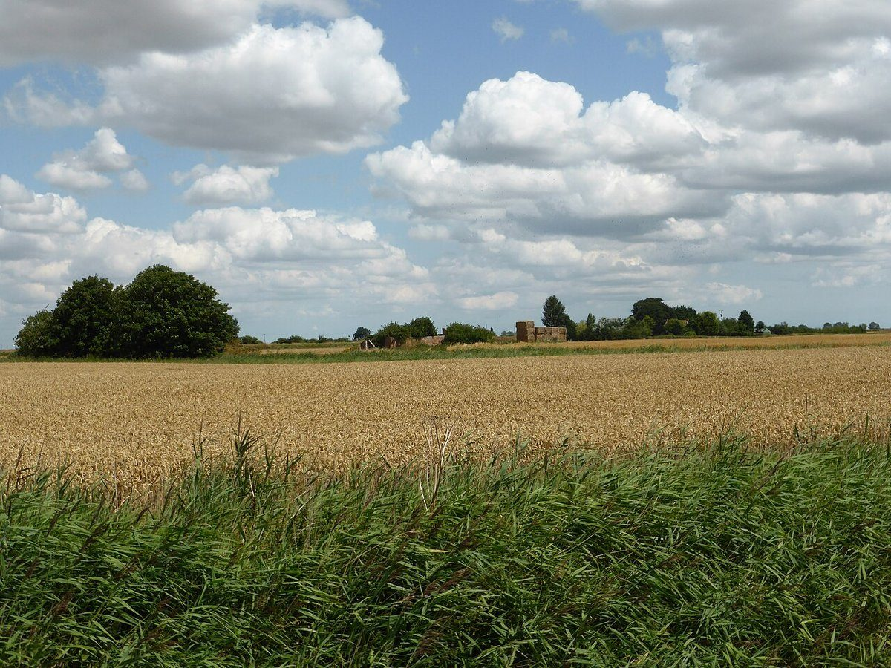
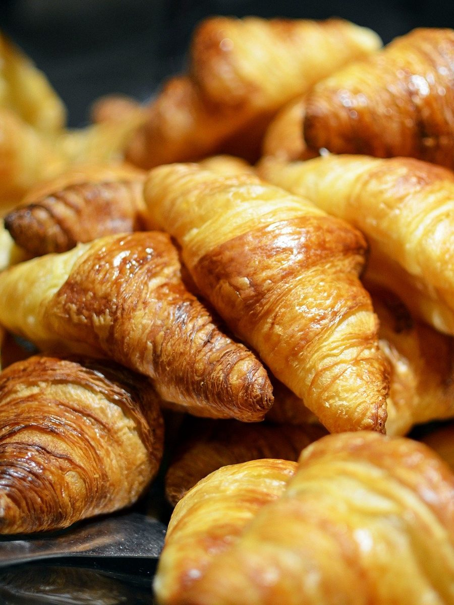
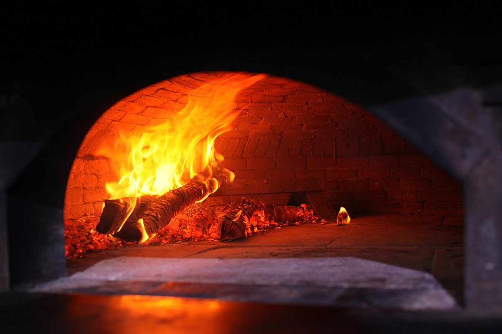
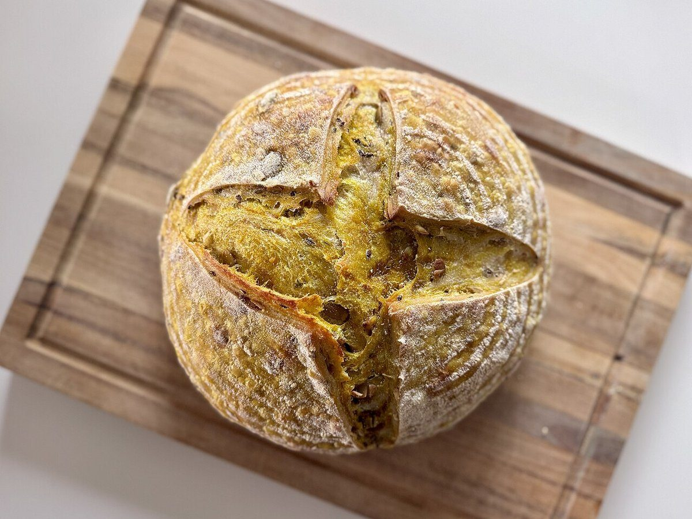

<!-- 屋号の「source」から、制作側が連想したページです -->
<title>パン工房source</title>
<h1>パン工房source</h1>
屋号の「source」は、「源」や「出どころ」を意味する言葉。このページでは、パンを一つ手に取ったとき、その源を一行ずつさかのぼってみます。
address="〒596-0042 大阪府岸和田市加守町4丁目30-15"
instagram="@source.1235"

<!-- ここから1行ずつ、さかのぼる(写真はすべてイメージ) -->
<h2>パンの源をたどる5行</h2>
1
<pan>
いまの一つ。焼き上がりの表面から、さかのぼりはじめます。

2
<kama>
焼く手前。窯の火の色が、次の行のヒント。

3
<kiji>
発酵をまつ生地。ふくらむ時間も、源のうち。

4
<kona>
白い粉。さらさらとした姿の、ひとつ前。

5
<mugi>
いちばん上流。黄金色の畑にたどり着いて、最初の行。
<!-- 焼き上がり(イメージ)のギャラリー -->



<h2>お店の情報</h2>
- address
- 〒596-0042 大阪府岸和田市加守町4丁目30-15
- tel
- なし
- hours
- 準備中
- closed
- 準備中
- @source.1235